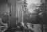
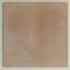
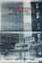
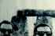

The Spence Collection
How art can change your life.
Discovery
Artworks in the Spence Collection

Created 1988 Created 1988
Created 1984 Created 1984
Created 1972 Created 1972
Created 1984 Created 1984

Created 1971 Created 1971

Created 1971 Created 1971
Created 1971 Created 1971
Created 1984 Created 1984

LandscapeCreated 1986 Created 1986
Created 1982 Created 1982

Created 196600 Created 196600

Created 1975 Created 1975

Pathetic Fallacy Series: Stoic PeachCreated 1975 Created 1975

Poster (Middelburg) showing Minneapolis Billb/dCreated 1985 Created 1985
Created 1987 Created 1987
Created 1989 Created 1989
Created 1986 Created 1986
Created 1985 Created 1985
Created 1986 or later Created 1986 or later

Poster: Corrected StonehengeCreated 1984 Created 1984
Created 1986 approx Created 1986 approx
Created 1987 Created 1987
Created 1981 Created 1981
Created 1984 Created 1984
Created 1988 Created 1988
Created 1981 Created 1981
Created 1987 Created 1987

Created 1976 Created 1976
Created 1988 Created 1988
Created 1988 Created 1988
Created 198400 Created 198400